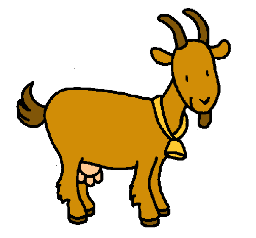

Animales Terrestres y Sus clasificacion
Los animales terrestres pueden vivir en diferentes lugares.El cuerpo de los animales terrestres está preparado para arrastrarse, caminar, correr, trepar o volar, según el lugar de la tierra en que viven.Los animales terrestres toman del aire el oxígeno que necesitan para vivir; casi todos respiran por pulmones y se alimentan de plantas y de otros animales. Algunos son enormes y otros muy pequeños.También hay animales que inmediatamente después de nacer pueden valerse por sí mismos y oros, más dependientes, tienen que se ayudados por sus padres hasta que aprenden a sobrevivir solos.
Ejemplos de Animales Terrestres:Clasificación Segun su Alimentación:
Los Carnívoros
Los Animales Carnívoros se alimentan únicamente de carne de animales y de personas, los animales carnívoros son muy peligrosos estos animales matan únicamente cuando se sienten hambrientos, nunca van a atacar por deseo de matar.
Ejemplo:
Los Herbívoros
Los Animales Herbívoros comen plantas, hojas, pasto, etc. La mayoría de los animales herbívoros no atacan, solo si se sienten amenazados.
Ejemplo:

Clasificación Segun su Nacimiento:
Los Viviparos
Los animales vivíparos se refiere a los animales que nacen del vientre de su madre, por ejemplo: nosotros los humanos, los delfines, las vacas, caballos, becerros, ballena, gato, jirafa, león, perro, elefante, conejo, etcétera.
Ejemplo:
Los Ovíparos
Los animales ovíparos son aquellos que nacen del huevo, por ejemplo: los pollos, tortugas, gallinas, avestruces, pájaros, patos, cocodrilo, tiburón, guacamaya, pavorreal, entre otros.
Ejemplo:


 1
1 4
4